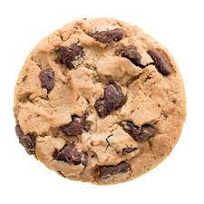

Cookies

Description
These peanut butter bars taste just like peanut butter cups.
Ingredients
- 1 cup butter or margarine, melted
- 2 cups graham cracker crumbs
- 2 cups confectioners' sugar
- 1 cup peanut butter
- 1½ cups semisweet chocolate chips
- 4 tablespoons peanut butter
Steps
- In a medium bowl, mix together the butter or margarine, graham cracker crumbs, confectioners' sugar, and 1 cup peanut butter until well blended. Press evenly into the bottom of an ungreased 9x13 inch pan.
- In a metal bowl over simmering water, or in a microwave-safe bowl in the microwave, melt the chocolate chips with the 4 tablespoons peanut butter, stirring occasionally until smooth. Spread over the prepared crust. Refrigerate for at least one hour before cutting into squares.